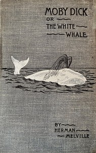

Mountain Men
Powder Law
Shadow Over Asian
Le clavecin hante
A la recherde d'une perle
El libro de las mil noches y una noche
Stories in yellow, black, white, blue, violet and red
Murder in Paris

Frankenstein; or, the modern prometheus
The City of God

Moby Dick; Or, The Whale

Pride and Prejudice

Romeo & Juliet

Alice In Wonderland

The Complete Works of William Shakespeare
The Jungle Book

Treasure Island
Gulliver's Travels into Several Remote Nations of the World

Adventure Of Tom Sawyer
England under the Angevin Kings, Volume I and II
The Travel of Marco Polo
Leviathan
The Art of Stage Dancing
History of Ancient Pottery: Greek, Etruscan, and Roman. Volume 1 (of 2)
A farewell to arms
The Lady of the Lake
The Blue Castle; a novel
Rizal's own story of his life
History of Gujarát
The magic of jewels and charms
Origin of Cultivated Plants

Peter Pan